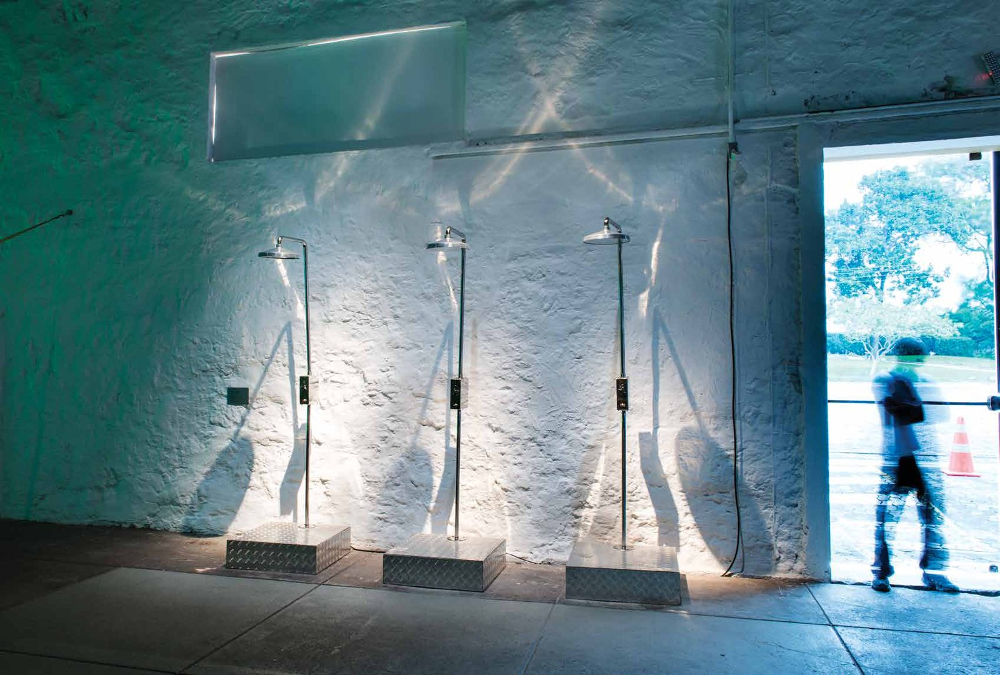

Chuveiros Sonoros
Prêmio Marcantonio Vilaça, Funarte, 2012
Use fones de ouvido
Objeto sonoro com chuveiros de aço inoxidável, amplificador e alto-falante, que reproduzem gravações caseiras de cantores anônimos. Prêmio Marcantonio Vilaça, Funarte, 2012; coleção do Museu de Arte Contemporânea de Niterói.
- Prêmio
- Prêmio Marcantonio Vilaça, Funarte, 2012
- Materiais
- Chuveiros de aço inoxidável, amplificador, alto-falante e gravações caseiras
- Dimensões
- 249 × 70 × 70 cm
- Local
- 7ª Bienal do Mercosul, Mostra Absurdo, Porto Alegre (2009); Casa de Cultura Laura Alvim (2013)
- Coleção
- Museu de Arte Contemporânea de Niterói (aquisição pelo prêmio); Coleção Sérgio Carvalho
- Exposição
- Sonar (2013), A Pele do Mundo (2023)

